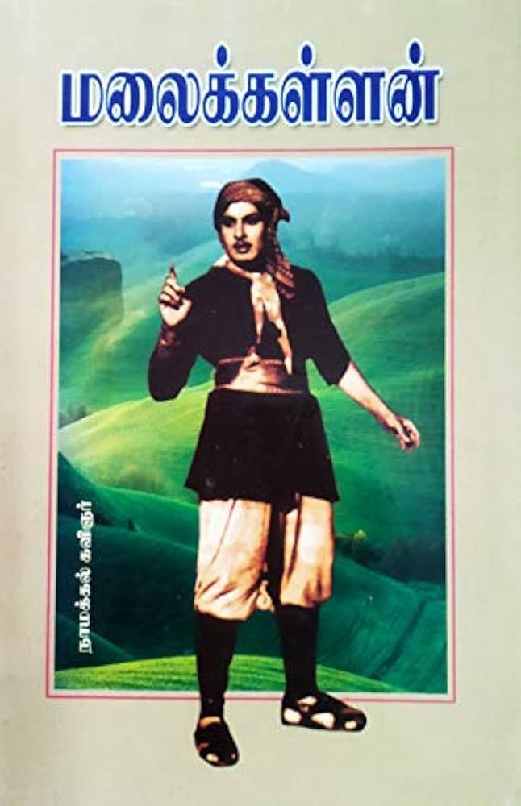

Title:
மலைக்கள்ளன்
Description:
-
நாமக்கல் கவிஞர் வெ. இராமலிங்கம் பிள்ளை 1931-ல் சத்யாக்கிரகப் போராட்டத்தில் ஈடுபட்டு ஓராண்டு திருச்சி சிறையில் இருந்தபோது இந்நாவலை எழுதியதாக இதன் முன்னுரையில் குறிப்பிடுகிறார். இந்நாவலை இரண்டு முன்னுதாரணங்களைக் கொண்டு எழுதினார். கல்கி எழுதிய கள்வனின் காதலி மற்றும் ரஷ்யக் கவிஞர் அலக்ஸாண்டர் புஷ்கின் எழுதிய துப்ரோவ்ஸ்கி என்னும் நாவல். வடலிவிளை செம்புலிங்கம் போன்ற கொள்ளையர் பற்றிய கதைப்பாடல்கள் அன்று மக்களிடம் புழக்கத்தில் இருந்தன. அவற்றின் கூறுமுறையை அடியொற்றியது இந்நாவல்.